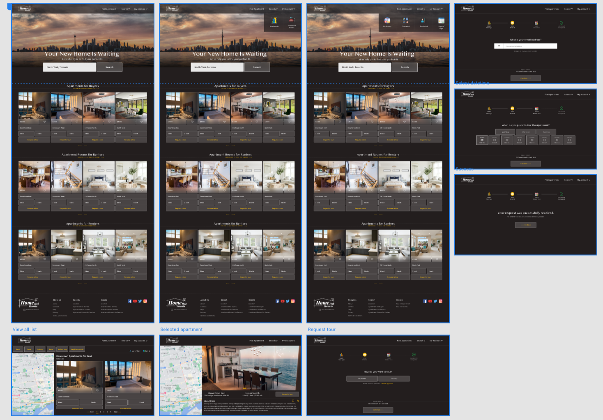
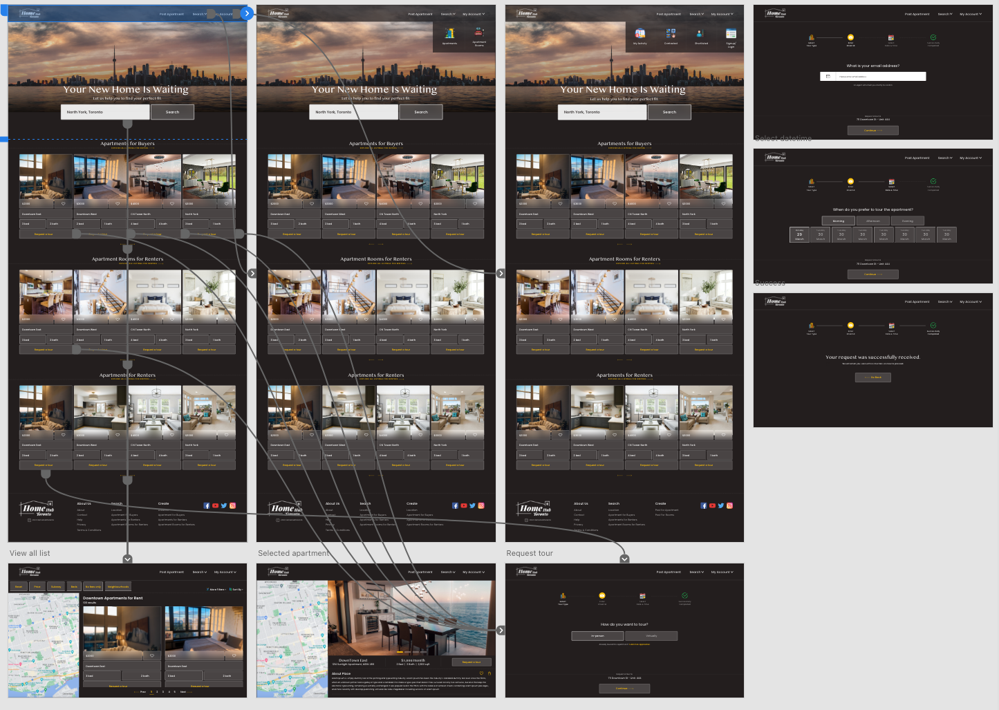

Summary
Problem
Apartment hunting can be challenging to visit all potential locations, and many existing apartment listing websites overwhelm and confuse users with excessive details. This can lead to frustration and wasted time for users who are trying to find the perfect apartment that meets their needs.
Solution
To address the challenges of apartment hunting, I aimed to design a solution that simplifies the search process, enabling users to quickly and easily find apartments that meet their preferences. This led to the creation of HomeHubToronto, a website that offers streamlined search and filtering options, as well as the ability to schedule visits with just one click. HomeHubToronto is designed to make apartment hunting a stress-free experience for users, allowing them to focus on finding their ideal home without being overwhelmed by excessive details or a complicated search process.

User Centered Design Process

Brainstorm & Ideation
Apartment hunting can be a time-consuming and challenging process for many people as it often requires extensive research and scheduling visits to numerous locations. However, with the HomeHubToronto platform, users can enjoy a streamlined and hassle-free apartment search experience. HomeHubToronto offers detailed information about apartment locations, including nearby transit options and neighborhood details, to help users make informed decisions quickly and easily. By providing comprehensive information upfront, HomeHubToronto eliminates the need for users to schedule visits to multiple locations, saving them valuable time and effort. Overall, HomeHubToronto is designed to provide a fast and easy apartment search experience, helping users find their perfect home with minimal hassle.
Based on that, I did user research based on IDEO card sorting methods, including secondary research, interview and survey to define our main target users and features.
User Research and Create Persona
The persona defined is based on our interview and survey findings:
- People prefer having access to comprehensive information about an apartment, including visual media such as images and videos, details about its location and proximity to public transportation, as well as information about the surrounding neighborhood prior to visiting in person.
- Many people prefer virtual apartment tours as it allows them to save time and avoid the hassle of traveling, while still providing an opportunity to view the space in detail.
Based on these findings, I create three persona who are our target users

I created a user journey map of Dhwani’s experience using the site to help identify possible pain points and improvement opportunities.
Sketches
sketched out paper wireframes for each screen in my app, keeping the user pain points about navigation, browsing, and book schedule flow in mind. The home screen paper wireframe variations to the right focus on optimizing the browsing experience for users.

Because HomeHubToronto customers access the site on a variety of different devices, I started to work on designs for additional screen sizes to make sure the site would be fully responsive.
Sitemap
Difficulty with website navigation was a primary pain point for users, so I used that knowledge to create a sitemap. My goal here was to make strategic information architecture decisions that would improve overall website navigation. The structure I chose was designed to make things simple and easy.

Initial UI Design and Wireframe
Using the completed set of digital wireframes, I created a low-fidelity prototype. The primary user flow I connected was building and selecting and scheduling, so the prototype could be used in a usability study.

Mockup Design
Based on my wireframe prototype, I conduct user testing with 8 participants. This time, I added more interaction and features into our final High-Fi Prototype.
Final Reflection
After the class was end, I did not stop the project but continued to work the interface design, including contextual design, interactive prototype.
Contextual Design and Interactive prototype
View the HomeHubToronto's high-fidelity prototype